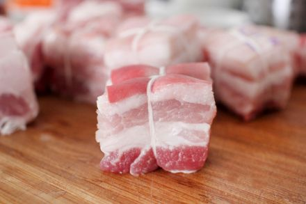
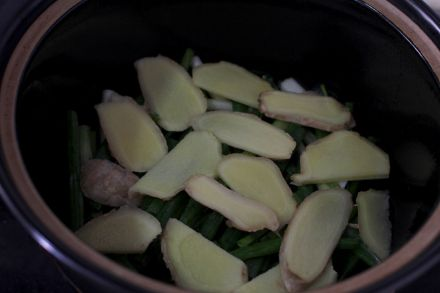
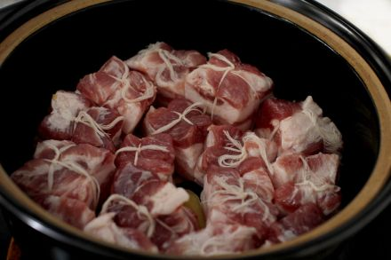
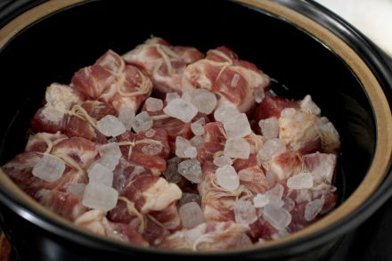
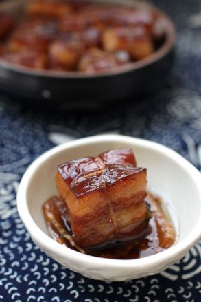

首页 秒懂 特色百科 用户 知识专题 权威合作
收藏 2351 488
东坡肉 |
（以猪肉为主材制作的浙菜系菜品） |
播报 编辑 讨论 上传视频
东坡肉又名滚肉、红烧肉。是江南地区汉族传统名菜，属于浙菜系，同时也属于川菜系，以猪肉为主要食材 [1] 。
东坡肉的主料和造型大同小异，主料都是半肥半瘦的猪肉，加入配料焖制而成，成品菜都是码得整整齐齐的麻将块儿， 红得透亮，色如玛瑙，夹起一块尝尝，软而不烂，肥而不腻。
| 中文名 | 东坡肉 | 口 味 | 咸甜、香糯 |
| 外文名 | Dongpo's braised pork | 主要食材 | 猪肉 |
| 分 类 | 浙菜、川菜 | 创始人 | 苏轼 |
- 菜品历史
- 菜品制作
- 成菜特征
- 食材原料
|
|
菜品历史 |
|
播报 编辑 |
 东坡肉(4张)
东坡肉(4张)
东坡肉相传为北宋词人苏轼（四川省眉山市人）所创制（一说为苏轼小妾王朝云在苏轼被贬黄州之际为改善饮食所创），最早发源地是四川眉山。 原型是徐州回赠肉， 为徐州“东坡四珍”之一。
相传宋神宗熙宁十年（1077年）四月，苏轼赴任徐州知州。七月七日，黄河在澶州曹村埽一带决口，至八月二十一日洪水围困徐州，水位竟高达二丈八尺。 苏轼以身卒之，亲荷畚插，率领禁军武卫营，和全城百姓抗洪筑堤保城。经过七十多个昼夜的艰苦奋战，终于保住了徐州城。全城百姓无不欢欣鼓舞， 他们为感谢这位领导有方，与徐州人民同呼吸、共存亡的好知州，纷纷杀猪宰羊，担酒携菜上府慰劳。苏轼推辞不掉，收下后亲自指点家人制成红烧肉， 又回赠给参加抗洪的百姓。百姓食后，都觉得此肉肥而不腻、酥香味美，一致称他为“回赠肉”。此后，“回赠肉”就在徐州一带流传，并成徐州传统名菜。 这在《徐州文史资料》、《徐州风物志》、《徐州古今名馔》中都有记述。
元丰三年(公元1080年)二月一日，苏轼被贬到黄州任团练副使。他自己开荒种地，便把此地号称“东坡居士”。这就是“东坡肉”的由来。 在黄州期间，他亲自动手烹饪红烧肉并将经验写入《食猪肉诗》中。苏轼在徐州及黄州时烹制的红烧肉，只是在当地有影响，在全国并没有多大名气。 真正叫得响并闻名全国的红烧肉，是苏轼第二次在杭州时的“东坡肉”。
宋哲宗元祐四年（1089年）一月三日，苏轼来到阔别十五年的杭州任知州。元祐五年五、六月间，浙西一带大雨不止，太湖泛滥，庄稼大片被淹。 由于苏轼及早采取有效措施，使浙西一带的人民度过了最困难的时期。他组织民工疏浚西湖，筑堤建桥，使西湖旧貌变新颜。 杭州的老百姓很感谢苏轼做的这件好事，人人都夸他是个贤明的父母官。听说他在徐州、黄州时最喜欢吃猪肉，于是到过年的时候， 大家就抬猪担酒来给他拜年。苏轼收到后，便指点家人将肉切成方块，烧得红酥酥的，然后分送给参加疏浚西湖的民工们吃，大家吃后无不称奇， 把他送来的肉都亲切地称为“东坡肉”。
追本穷源，苏轼的这种红烧肉最早在徐州的创制，在黄州时得到进一步提高，在杭州时闻名全国 [2]。
|
|
菜品制作 |
|
播报 编辑 |
成菜特征
一般选用半肥半瘦的猪肉，切成约二寸许的方正形猪肉做食材。
成菜后，薄皮嫩肉，色泽红亮，味醇汁浓，酥烂而形不碎，香糯而不腻口。
食材原料
| 精五花肉800g | 香葱1把 |
| 姜1大块 | 黄酒250g |
| 生抽+清水100+100 | 冰糖40g [7] |
制作方法
| 步骤 | 具体操作 | 步骤图 |
|---|---|---|
| 步骤1 | 选精五花肉800g，清洗之后切成4厘米左右见方块，然后用棉线从四周捆好 |  |
| 步骤2 | 取砂锅在锅底刷一层油，码上香葱和姜片，锅底一定要铺满，否则会粘锅 |  |
| 步骤3 | 肉皮朝下码放好 |  |
| 步骤4 | 一次性加入黄酒、生抽和冰糖，开火。 锅开后改文火慢炖一个小时，一个小时后把肉翻过来再煲15分钟即可，文火慢炖不会糊锅哒。 |  |
| 步骤5 | 成品图。 |  |